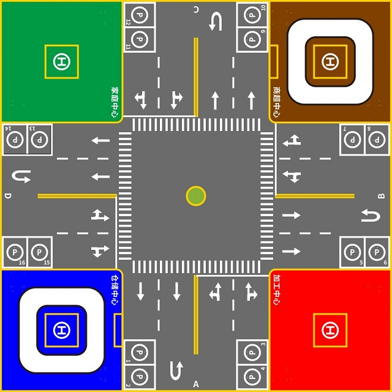
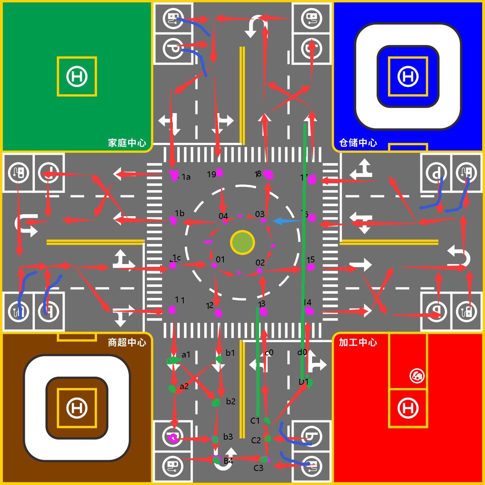

交通车库
智慧交通系统与 ROS 智能小车
一个机器人与智慧交通方向项目，覆盖 ROS 导航、激光雷达建图、路径规划、定位和路径执行。
项目概览
下载的材料包含一套结构化的智慧城市实验内容，围绕自主导航、路径规划、精准定位和车辆调度任务展开。
该项目可以展示 ROS 工作流、仿真/实验组织、导航栈配置，以及基于 Python 的路径规划逻辑。
模块拆解
- 自主导航：激光雷达建图和激光雷达导航实验。
- 路径规划：电子地图、路径规划和路径执行模块。
- 精准定位：雷达定位和轨迹跟踪相关脚本。
- 车辆调度：智慧交通场景下的任务级调度材料。
代码证据
mbot_navigation / launch / gmapping.launch
mbot_navigation / launch / move_base.launch
map / map.py, map_path.py, showmap.py
aicar_test / script / tracking / pure_pursuit.py
aicar_test / script / tracking / mpc.py
aicar_test / script / tracking / stanley_controller.py
展示素材


代码公开说明
该项目代码可以公开。正式发布前，建议清理或分离生成文件、冗余第三方包、二进制文件和机器相关配置。